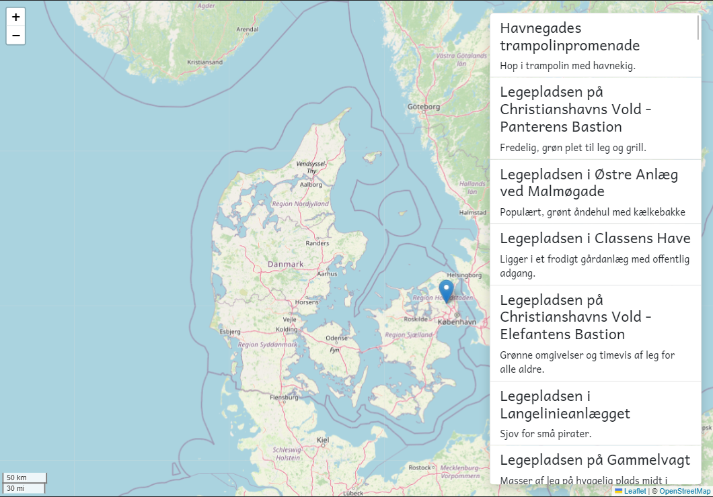

Not happy with the result of the previous exercise? Go to the labs/signals/exercise-2 directory and run npm i. When complete, start the application by running npm start
Open the sidebar.component.ts and convert the @Input & @Output into input & output signals.
Make sure that the playgrounds input property is required.
Notice how we don't change anything in the home.component.ts template? Quite nice 😍
But we do need to update the sidebar template.
There are actually quite a few things we need to fix in our sidebar template. See if you can figure it out🤓
Ask for help, if you get stuck
